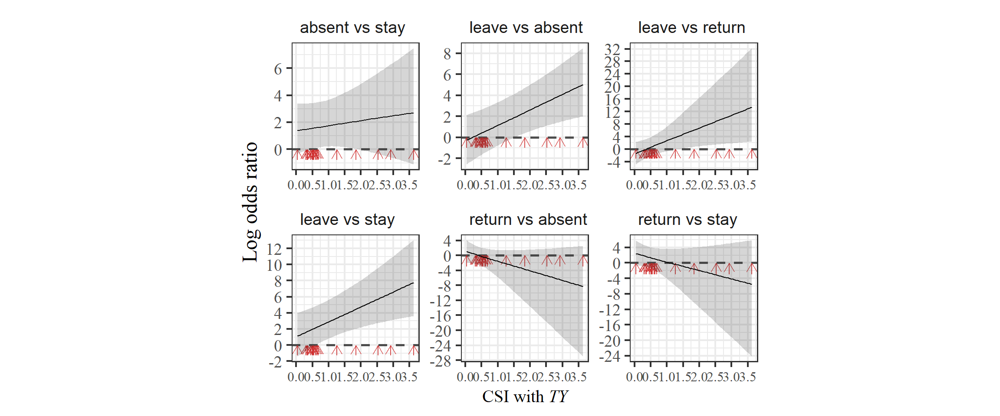
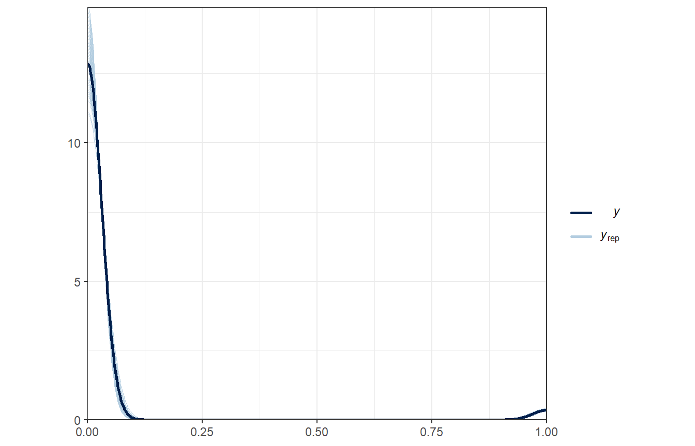

11 メスが群れに戻るときのメカニズム
本章では、メスが群れに戻るのはどのようなときなのかに関する分析を行う。以下では、メスの毎日の確認状況のデータからメスが群れに戻る要因を探る(図11.1)。

図11.1: メスの確認状況に影響する要因
11.1 データの加工
11.1.1 オスの出入り情報
まず、オスの出入り情報について算出する。第9.3.1.4でやったように4通りの場合を考える。
TYIT_presence_pre %>%
mutate(TY_state4 = ifelse(TY_pre == 1 & TY == 1, "TY_stay",
ifelse(TY_pre == 1 & TY == 0, "TY_out",
ifelse(TY_pre == 0 & TY == 1, "TY_return",
ifelse(TY_pre == 0 & TY == 0, "TY_absent", NA))))) %>%
mutate(TY_state4 = fct_relevel(TY_state4, "TY_stay", "TY_absent","TY_return")) %>%
mutate(IT_state4 = ifelse(IT_pre == 1 & IT == 1, "IT_stay",
ifelse(IT_pre == 1 & IT == 0, "IT_out",
ifelse(IT_pre == 0 & IT == 0, "IT_absent",
ifelse(IT_pre == 0 & IT == 1, "IT_return", NA))))) %>%
mutate(IT_state4 = fct_relevel(IT_state4, "IT_stay", "IT_absent","IT_return")) %>%
mutate(TY_state = ifelse(TY_pre == 0 & TY == 1, "TY_return",
ifelse(TY_pre == 0 & TY == 0, "TY_absent",
ifelse(TY_pre == 1, "TY_present", NA)))) %>%
mutate(TY_state = fct_relevel(TY_state, "TY_present", "TY_absent","TY_return")) %>%
mutate(IT_state = ifelse(IT_pre == 0 & IT == 1, "IT_return",
ifelse(IT_pre == 0 & IT == 0, "IT_absent",
ifelse(IT_pre == 1, "IT_present", NA)))) %>%
mutate(IT_state = fct_relevel(IT_state, "IT_present", "IT_absent","IT_return")) %>%
mutate(TY_return = ifelse(TY_state4 == "TY_return", 1, 0),
IT_return = ifelse(IT_state4 == "IT_return", 1, 0)) %>%
replace_na(list(IT_state4 = "IT_absent",
IT_state = "IT_absent",
IT_return = 0)) -> male_state11.1.2 メスが群れに戻った日の同定
続いて、各メスが群れに戻ったか否かを記したデータフレームを作成する。
## 発情状態とアカンボウの有無を結合
female_pre_long %>%
mutate(date_pre = date - 1) %>%
left_join(female_pre_long %>%
select(date, femaleID, presence) %>%
rename(presence_pre = presence),
by = c("date_pre" = "date", "femaleID")) %>%
mutate(female_in = ifelse(is.na(presence_pre), NA,
ifelse(presence_pre == 0 & presence == 1,1,0))) %>%
## 前日にメスがいない日のみを抽出
filter(presence_pre == 0) %>%
## オスの出入りがある期間のみを抽出
filter(study_period %in% c("m19", "m20", "m21", "nm20", "nm21")) %>%
left_join(female_all %>%
select(date,femaleID, rs2), by = c("date","femaleID")) -> female_in11.1.3 血縁個体が群れに戻ったか否か
続いて、各観察日に血縁個体が群れに戻ったか否かを算出する。
kin <- read_csv("../Data/data/others/kin.csv")
female_in %>%
select(groupID, date, study_period, femaleID, female_in, presence_pre) %>%
## 他のメスのデータを結合
left_join(att %>%
filter(age >= 6) %>%
select(study_period, femaleID) %>%
rename(femaleID2 = femaleID),
by = "study_period") %>%
filter(femaleID != femaleID2) %>%
## 他のメスが群れを離れたか否かの列を作成
left_join(female_in %>%
select(groupID, date, femaleID, female_in) %>%
rename(female_in2 = female_in,
femaleID2 = femaleID),
by = c("groupID","date", "femaleID2")) %>%
replace_na(list(female_in2 = 0)) %>%
## 相手のメスとの血縁度を結合
left_join(kin, by = c("femaleID", "femaleID2")) %>%
filter(female_in2 == 1) %>%
## それぞれの日で離れたメスの最大の血縁度を算出
group_by(groupID, date, femaleID) %>%
summarise(max_kin = max(kin),
## 血縁カテゴリーも作成する
kin_cat = as.character(max(kin))) %>%
mutate(kin_01 = ifelse(max_kin > 0, 1,0)) -> kin_female_in11.1.4 全データの結合
最後に、全データを結合する。
female_in %>%
left_join(no_female_over0.5 %>%
select(date, prop_female) %>%
rename(date_pre = date),
by = c("date_pre")) %>%
left_join(male_state %>% select(date, groupID, TY_state4, IT_state4, TY_state, IT_state, TY_return, IT_return),
by = c("date", "groupID")) %>%
left_join(CSI_TY %>%
rename(femaleID = subject) %>%
select(femaleID, CSI_TY),
by = "femaleID") %>%
left_join(CSI_IT %>%
rename(femaleID = subject) %>%
select(femaleID, CSI_IT),
by = "femaleID") %>%
left_join(no_female_over0.5_b %>%
select(date, TY, IT) %>%
mutate(date = date + 1) %>%
rename(TY_pre = TY,
IT_pre = IT)) %>%
left_join(kin_female_in,
by = c("groupID","date", "femaleID")) %>%
left_join(sum_ntm, by = c("date_pre" = "date")) %>%
left_join(agg_rate_all %>%
select(date, rate_agg_all) %>%
mutate(date = date + 1) %>%
rename(rate_agg_all_pre = rate_agg_all), by = c("date")) %>%
replace_na(list(max_kin = 0,
kin_cat = "no")) %>%
mutate(kin_01 = ifelse(max_kin > 0, 1,0)) %>%
mutate(kin_cat = as.factor(kin_cat)) %>%
group_by(study_period) %>%
## 相対順位を算出
mutate(max_rank = max(rank)) %>%
ungroup() %>%
mutate(rank_scaled = rank/max_rank) -> female_in_final11.2 分析(モデリング)
以下では、交尾期と非交尾期に分けて分析を行う。分析に含まれるのは、6歳以上でかつTY、ITとのCSIが算出できる個体(= 2019年時点で6歳以上の個体)である。
11.2.1 交尾期
11.2.1.1 データの加工
まず、データの加工を行う。データ数が少ないのと、区別が難しいので発情/非発情は分けない。
female_in_m <- female_in_final %>%
filter(!str_detect(study_period, "nm")) %>%
drop_na(CSI_TY) %>%
mutate(CSI_TY_std = standardize(CSI_TY),
CSI_IT_std = standardize(CSI_IT),
ntm_std = standardize(no_ntm),
prop_std = standardize(prop_female),
rank_std = standardize(rank_scaled),
age_std = standardize(age),
rate_agg_all_std = standardize(rate_agg_all_pre)) %>%
mutate(N = 1:n())11.2.1.2 モデリング1
まず、TYとITが群れに戻ったか否かという2水準の変数を用いてモデリングを行う。モデルの詳細は以下のとおりである。なお、連続変数はすべて標準化している。
- 応答変数: メスが群れに戻ったか否か(\(female_in\))
- 説明変数: TYが群れに戻ったか(\(TY_return\))、TYとの親密度(\(CSI_TY\))、これらの交互作用、ITが群れに戻ったか(\(IT_return\))、ITとの親密度(\(CSI_IT\))、これらの交互作用、年齢(\(age_std\))、順位\(rank_std\)、前日の確認メス割合\(prop_std\)、前日の群れ外オス数\(ntm_std\)、前日のオスの攻撃頻度(\(rate_agg_std\))
- ランダム切片: メスID(\(femaleID\))、日付(\(date\))
モデルは以下のように実行する。
### ITとCSIの交互作用はVIFが高いので除く
m_female_in_m <- brm(data = female_in_m %>%
mutate(date = as.factor(date)),
female_in ~ TY_return*CSI_TY_std + IT_return*CSI_IT_std + kin_01 +
rank_std + age_std + ntm_std + prop_std + rate_agg_all_std +
study_period + (1|femaleID) + (1|date) + (1|N),
family = "bernoulli",
prior = c(prior(student_t(4,0,10),class = Intercept),
prior(student_t(4,0,10), class = b),
prior(student_t(4,0,5), class = sd)),
iter = 11000, warmup = 1000, seed = 112,
control=list(adapt_delta = 0.999, max_treedepth = 15),
backend = "cmdstanr",
file = "model/m_female_in_m")
## 2021年を除く
female_in_m_bf21 <- female_in_m %>%
filter(study_period != "m21") %>%
mutate(CSI_TY_std = standardize(CSI_TY),
CSI_IT_std = standardize(CSI_IT),
ntm_std = standardize(no_ntm),
prop_std = standardize(prop_female),
rank_std = standardize(rank_scaled),
age_std = standardize(age),
rate_agg_all_std = standardize(rate_agg_all_pre))
## TYの動向とCSIの交互作用はVIFが高いので除外
m_female_in_m_bf21 <- brm(data = female_in_m_bf21 %>%
mutate(date = as.factor(date)),
female_in ~ TY_return*CSI_TY_std + IT_return*CSI_IT_std + kin_01 +
rank_std + age_std + ntm_std + prop_std + rate_agg_all_std +
study_period + (1|femaleID) + (1|date) + (1|N),
family = "bernoulli",
prior = c(prior(student_t(4,0,10),class = Intercept),
prior(student_t(4,0,10), class = b),
prior(student_t(4,0,5), class = sd)),
iter = 11000, warmup = 1000, seed = 124,
control=list(adapt_delta = 0.999, max_treedepth = 15),
backend = "cmdstanr",
file = "model/m_female_in_m_bf21")11.2.1.2.1 モデルチェック
まず、DHARMaパッケージ(Hartig, 2022)とDHARMa.helperパッケージ(Rodríguez-Sánchez, 2023)でモデルの前提が満たされているかを確認する。特に問題はないよう。

bayesplotパッケージ(Gabry & Mahr, 2022)のpp_check関数で、事後分布からの予測分布と実測値の分布を比較しても大きな乖離はない。

多重共線性のチェックもお個あったが、VIFに問題はない。
最後に残差の時系列相関のチェックを行う。残差の自己相関をプロットすると、明確なパターンは見られなかった。また、Ljung-Box検定で3時点前までの残差との自己相関を検定したところ、有意な自己相関を示したのはNreだけだった。
res_female_in_m <- female_in_m %>%
mutate(resid = dh_female_in_m$scaledResiduals) %>%
mutate(date = as_date(date)) %>%
group_by(femaleID) %>%
complete(date = seq.Date(min(date), max(date), by = "1 day")) %>%
ungroup()
females <- unique(female_in_m$femaleID)
acf_female_in_m <- NULL
for(i in seq_along(females)){
data <- res_female_in_m %>%
filter(femaleID == females[i])
out.acf <- acf(data$resid,
lag.max = 5,
na.action = na.pass,
plot = F)
box_test <- Box.test(data$resid, type = "Ljung-Box", lag = 3)
out.df <- data.frame(Timelag = out.acf$lag,
Acf = out.acf$acf,
femaleID = females[i],
p = box_test$p.value)
acf_female_in_m <- bind_rows(acf_female_in_m, out.df)
}
acf_female_in_m %>%
mutate(p = str_c("p = ",round(p,2))) %>%
ggplot(aes(x = Timelag,
y = 0))+
geom_segment(aes(xend = Timelag,
yend = Acf))+
geom_text(aes(x = 4, y = 0.8,
label = p),
size = 3.5,
family = "Arial")+
theme_bw()+
theme(aspect.ratio = 1)+
facet_rep_wrap(~femaleID,
repeat.tick.labels = TRUE)
11.2.1.2.2 結果の確認
結果は以下の通り。
Explanatory variables | Median | 95%CI | Rhat | ESS |
|---|---|---|---|---|
切片 | -15.91 | [-30.52,-5.80] | 1.00 | 15,269.41 |
TYが戻ったか(vs 否) | 3.93 | [-9.62,18.80] | 1.00 | 40,937.28 |
TYとの親密度(CSI) | -2.37 | [-7.87,2.45] | 1.00 | 25,322.45 |
TYが戻ったか(vs 否) | 12.46 | [1.05,28.90] | 1.00 | 28,057.80 |
ITが戻ったか(vs 否) | 13.52 | [-1.63,34.16] | 1.00 | 29,323.65 |
ITとの親密度(CSI) | -4.94 | [-11.26,0.77] | 1.00 | 18,680.27 |
ITが戻ったか(vs 否) | -2.46 | [-17.12,9.78] | 1.00 | 40,838.21 |
前日のオスからの攻撃頻度 | -0.80 | [-7.34,5.52] | 1.00 | 26,044.72 |
前日の群れ外オス数 | -0.68 | [-6.31,4.90] | 1.00 | 23,545.89 |
血縁のメスが群れに戻ったか | 15.13 | [6.32,29.42] | 1.00 | 14,562.27 |
順位 | -4.29 | [-9.14,-0.21] | 1.00 | 18,718.17 |
年齢 | -4.61 | [-10.60,-0.12] | 1.00 | 22,673.85 |
前日確認したメスの割合 | 6.95 | [2.06,14.37] | 1.00 | 17,194.10 |
調査期間(m20 vs m19) | -5.85 | [-18.82,5.50] | 1.00 | 28,486.60 |
調査期間(m21 vs m19) | 1.91 | [-8.44,13.14] | 1.00 | 28,571.84 |
11.2.1.2.3 結果の図示
11.2.1.2.3.1 TYの動向・ CSIとメスに戻る確率の関連
まずは、estimate_contrasts関数を用いて、TYとのCSIに応じてオッズ比の対数をとったものがどのように変わるかを図示する。TYと親密度が高いメスは同じ日に群れに戻る確率が高いことが分かる。
cont_female_in_m <- estimate_contrasts(m_female_in_m,
contrast = "TY_return = c(0,1)",
at = "CSI_TY_std",
length = 50)
cont_female_in_m %>%
rename(Level1 = Level2, Level2 = Level1) %>%
mutate(Difference = -Difference) %>%
data.frame() %>%
rename(CSI_TY = CSI_TY_std) %>%
mutate(CSI_TY = sd(female_in_m$CSI_TY)*CSI_TY + mean(female_in_m$CSI_TY)) %>%
ggplot(aes(x = CSI_TY, y = Difference)) +
geom_hline(aes(yintercept = 0),
linetype = "dashed",
color = "grey30",
linewidth = 1)+
geom_line()+
geom_ribbon(aes(ymin = -CI_low, ymax = -CI_high),
alpha = 0.2)+
theme_bw(base_size = 18)+
theme(aspect.ratio = 1) +
labs(y = "Log odds ratio", x = expression(paste("CSI with ",italic("TY")))) +
scale_x_continuous(breaks = seq(0,3.5,0.5))+
theme(axis.title.y = element_text(family = "Arial"),
axis.title.x = element_text(family = "Arial",
size = 15),
axis.text.x = element_text(family = "Arial",
size = 12),
axis.text.y = element_text(family = "Arial"),
aspect.ratio = 1,
strip.background = element_blank(),
strip.text = element_text(hjust = 0))+
scale_y_continuous(breaks = seq(-40,100,10)) -> p_female_in_m_TYcsi
p_female_in_m_TYcsi
# ggsave("figures/p_female_in_m_TYcsi.png",
# p_female_in_m_TYcsi, dpi = 900, units = "mm",
# width = 100, height = 100)11.2.1.2.3.2 ITの動向・ CSIとメスに戻る確率の関連
続いて、2021年までのデータを用いたモデルをもとに、ITとのCSIに応じてオッズ比の対数をとったものがどのように変わるかを図示する。TYと親密度が高いメスは同じ日に群れに戻る確率が高いことが分かる。
cont_female_in_m_IT <- estimate_contrasts(m_female_in_m_bf21,
contrast = "IT_return = c(0,1)",
at = "CSI_IT_std",
length = 50)
cont_female_in_m_IT %>%
rename(Level1 = Level2, Level2 = Level1) %>%
mutate(Difference = -Difference) %>%
data.frame() %>%
rename(CSI_IT = CSI_IT_std) %>%
mutate(CSI_IT = sd(female_in_m_bf21$CSI_IT)*CSI_IT + mean(female_in_m_bf21$CSI_IT)) %>%
ggplot(aes(x = CSI_IT, y = Difference)) +
geom_hline(aes(yintercept = 0),
linetype = "dashed",
color = "grey30",
linewidth = 1)+
geom_line()+
geom_ribbon(aes(ymin = -CI_low, ymax = -CI_high),
alpha = 0.2)+
theme_bw(base_size = 18)+
theme(aspect.ratio = 1) +
labs(y = "Log odds ratio", x = expression(paste("CSI with ",italic("IT")))) +
scale_x_continuous(breaks = seq(0,3.5,0.5))+
theme(axis.title.y = element_text(family = "Arial"),
axis.title.x = element_text(family = "Arial",
size = 15),
axis.text.x = element_text(family = "Arial",
size = 12),
axis.text.y = element_text(family = "Arial"),
aspect.ratio = 1,
strip.background = element_blank(),
strip.text = element_text(hjust = 0))+
scale_y_continuous(breaks = seq(-40,100,10)) -> p_female_in_m_ITcsi
p_female_in_m_ITcsi
# ggsave("figures/p_female_in_m_ITcsi.png",
# p_female_in_m_ITcsi, dpi = 900, units = "mm",
# width = 100, height = 100)11.2.1.2.3.3 メス同士の血縁度との関連
female_in_m %>%
mutate(kin_01 = as.factor(kin_01)) %>%
group_by(kin_01, femaleID) %>%
summarise(prop = mean(female_in),
n = n()) %>%
ungroup() %>%
filter(n >= 3) %>%
ggplot(aes(x = kin_01, y = prop))+
geom_count(alpha = 0.5)+
geom_line(aes(group = femaleID))+
scale_size(range = c(2,8))+
theme_bw(base_size = 13)+
labs(x = "If kin females returned the group",
y = "Probability of female returning main group",
color = "Study period",
fill = "Study period")+
coord_cartesian(xlim = c(1.2,1.7),
ylim = c(0,1.15))+
scale_x_discrete(labels = c("No", "Yes")) +
theme(axis.title.y = element_text(family = "YArial",
size = 12),
axis.title.x = element_text(family = "Arial", size =12),
axis.text = element_text(family = "Arial",
size = 12),
legend.title = element_text(family = "Arial"),
legend.text = element_text(family = "Arial"),
aspect.ratio = 0.9) +
geom_signif(xmin = 1, xmax = 2,
y_position = 1.1, annotation = "***",
vjust = 0.01,
textsize = 5) -> p_female_in_kin
p_female_in_kin